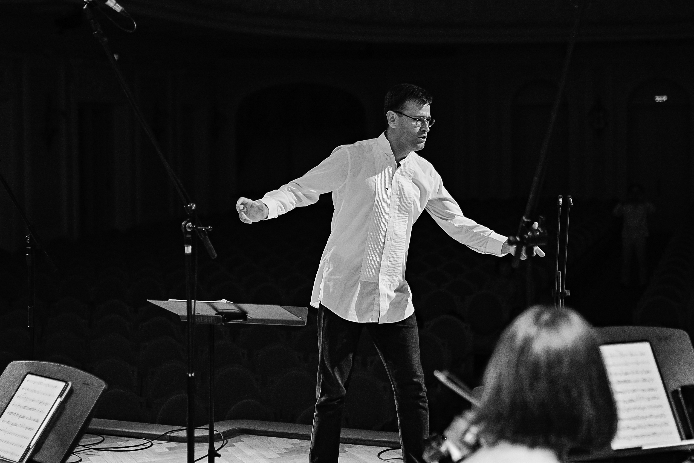
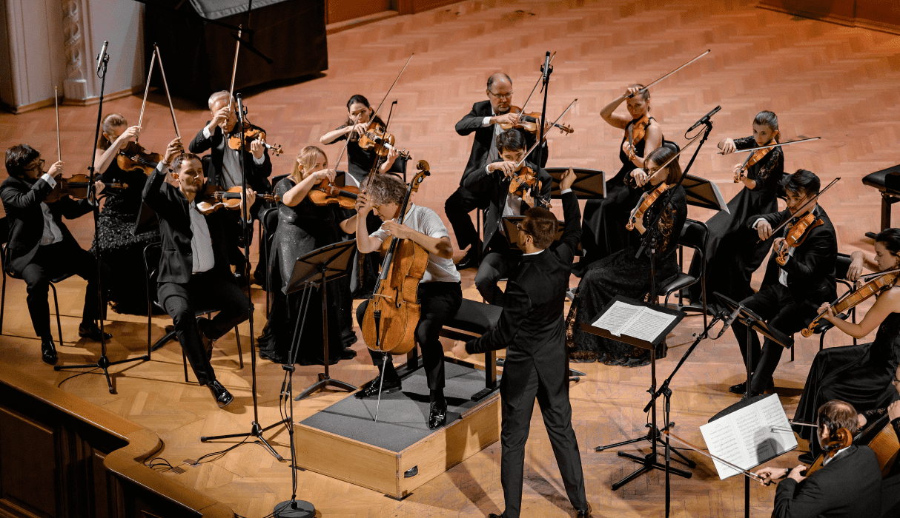
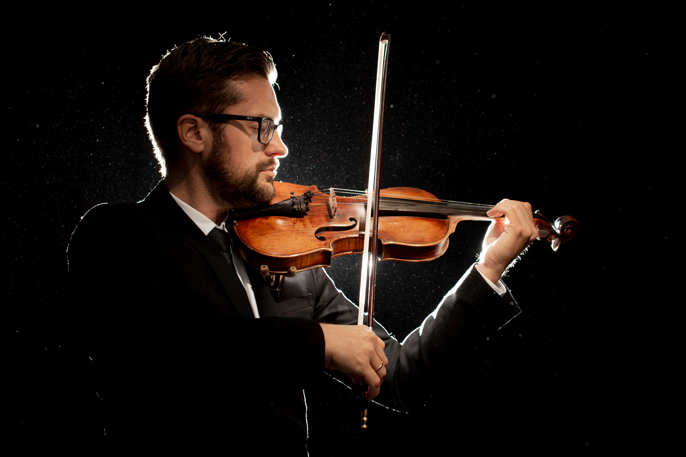

ПРЕДСТОЯЩИЕ СОБЫТИЯ
Октябрь 2023
ОБ ОРКЕСТРЕ
Струнный оркестр «Метаморфоза» — это наслаждение для ценителей и гурманов классической музыки.
«Метаморфоза» — это концерты с участием от 12 до 76 музыкантов, в том числе с зарубежными и
белорускими артистами
мирового уровня. Камерные, большие симфонические и индивидуальные составы оркестра. Яркие программы
и музыкальное
наслаждение искренностью, эмоциональностью и красотой подачи классических шедевров и современной
музыки. Каждое
выступление оркестра «Метаморфоза» — это праздничный фейерверк впечатлений и чувств от живой
классики в стильном и
современном исполнении!

Оркестр «Метаморфоза» был создан в 2015 году дирижёром Павлом Любомудровым, выпускником
Санкт-Петербургской государственной
консерватории им. Н.А. Римского-Корсакова по специализации оперно-симфоническое дирижирование
(класс Заслуженного артиста
РСФСР, профессора А.В. Алексеева).
Струнный оркестр «Метаморфоза» является членом Белорусского союза музыкальных деятелей. Оркестру
всего 7 лет, тем не
менее, он провёл более 40 концертных программ, некоторые из них получили высокую оценку
белорусских и зарубежных критиков.

«Метаморфоза» со своим постоянно меняющимся музыкальным репертуаром подтверждает своё название,
экспериментируя
со своим творческим ДНК. В репертуаре оркестра как произведения разных композиторских школ: от Альбинони
до
Сибелиуса, от Прокофьева до современных белорусских композиторов, чьи сочинения оркестр часто исполняют
впервые,
так и саундтреки к известным кинофильмам.
Солисты концертных программ оркестра — виолончелисты: Микаэл Самсонов, Александр Князев, Михаил Радунский, Антонио Мостаччи; скрипачи: Андрей Баранов, Лиза Якобс, Илья Иофф, Айлен Притчин, Дмитрий Смирнов, Юлия Лебеденко; арфистка Cофия Кипрская; пианисты: Станислав Соловьёв и Денис Линник; флейтистка Мария Федотова; гобоист Хуан Мануэль Гарсия-Кано совместно выступали со Струнным оркестром «Метаморфоза».
Солисты концертных программ оркестра — виолончелисты: Микаэл Самсонов, Александр Князев, Михаил Радунский, Антонио Мостаччи; скрипачи: Андрей Баранов, Лиза Якобс, Илья Иофф, Айлен Притчин, Дмитрий Смирнов, Юлия Лебеденко; арфистка Cофия Кипрская; пианисты: Станислав Соловьёв и Денис Линник; флейтистка Мария Федотова; гобоист Хуан Мануэль Гарсия-Кано совместно выступали со Струнным оркестром «Метаморфоза».

Каждое выступление оркестра незабываемо. Ценители классической музыки порой получают настоящее духовное
удовольствие и утешение от концертов оркестра «Метаморфоза».
Музыка меняет людей, в ней нуждаются все, а не только люди искусства. Музыка вызывает лучшие эмоции,
выступая в качестве очищающего фильтра на уровне подсознания
Художественный руководитель и дирижёр Павел Любомудров
Павел Любомудров окружил себя талантливыми белорусскими музыкантами, среди них выпускники крупнейших
музыкальных вузов Санкт-Петербурга, Москвы и Минска. Мастерство и профессионализм оркестра «Метаморфоза»
отмечен сотрудничеством с итальянской звукозаписывающей компанией Halidon. «Метаморфоза» — единственный
такой оркестр из Беларуси. В 2016м году Оркестр «Метаморфоза» совместно выступал с американской
метал-группой MANOWAR в Минске, ещё раз доказав свою многогранность, креативность и талант.
Струнный оркестр «Метаморфоза» обладает достаточным опытом и готов к сотрудничеству, в том числе и с иностранными партнёрами.
Струнный оркестр «Метаморфоза» обладает достаточным опытом и готов к сотрудничеству, в том числе и с иностранными партнёрами.
Репертуар
- 1 и 2 сюиты из балета «Ромео и Джульетта» С. Прокофьева.
- Сюита «Щелкунчик» op.71, фантазия-увертюра «Ромео и Джульетта», Вариации на тему рококо и Пеццо Каприччиозо для виолончели, «Воспоминание о Флоренции» и Серенада для струнного оркестра, Вальс Скерцо op.23 и Размышление 0p.42, № 1 П.И. Чайковского.
- Симфоническая сюита «Шехеразада» и «Испанское каприччио» Н.А. Римского-Корсакова. 1я сюита из оперы «Кармен» Ж. Бизе. «Ночь на лысой горе» (аранж. Н.А. Римского-Корсакова) и «Картинки с выставки» М.П. Мусоргского.1-я, 2-я, 3-я, 4-я, 5-я и 8-я симфонии, увертюра «Кориолан» Л. Бетховена.
- Концерты для флейты А.Ю. Эшпая (посвящ. М. Федотовой), В.А. Моцарта (для гобоя), А. Сальери (для флейты и гобоя).
- Концерт для фортепиано с оркестром № 1 ре минор, соч. 15 Й. Брамса.
- Концерт для скрипки К. Нильсена.
- Все концерты для клавира № 1–7 BWV 1052–1058, 3 и 6 «Бранденбургские концерты» И.С. Баха. 14й квартет «Смерть и Дева» (аранж. Г. Малера) Ф. Шуберта. «Дивертисмент для струнных» Б. Бартока. 40-я симфония, Дивертисменты № 1–3, К. 136–138 и Серенада соль мажор, К. 525 В.А. Моцарта.
- Камерная симфония, соч. 110 Д.Д. Шостаковича и Простая симфония Б. Бриттена.
- Концерт № 11 для фортепиано с оркестром, первый и второй концерты для виолончели, 45-я симфония и «Семь последних слов Христа на Кресте» Й. Гайдна. «Холберг сюита» Э. Грига. «Серенада для струнного оркестра» Л. Яначека. «Серенада на Шведские Мелодии» и «Кол-Нидрей» М. Бруха. «Молитва» Э. Блоха. «Вокализ» С. Рахманинова. «Четыре сезона в Буэнос-Айресе», «Забвение», «Большое танго» и «Либертанго» А. Пьяццоллы. «Четыре сезона года» и концерт для лютни с оркестром, RV 93 А. Вивальди, «Дьявольскин трели» (переложение для струнных и скрипки соло) Дж. Тартини.
- Гитарный концерт № 1 ре мажор, соч. 99 М. Кастельнуово-Тедеско. «Вариации на тему Россини» и 2-й концерт для скрипки с оркестром (аранжировка для струнных) Н. Паганини. «Грустный вальс», «Романс in C» op.42 и «Праздничное Анданте» Я. Сибелиуса. «Интродукция и Рондо Каприччиозо», «Андалузский романс» и «Цыганские напевы» П. Сарасате. «Адажио для струнных» С. Барбера. «Павана» Г. Форе. «Танец эльфов» Д. Поппера. Музыка из кинофильмов: «Пираты Карибского моря», «Властелин колец», «Звёздные войны», «Джеймс Бонд», «Африка», «Грязные танцы», «Ромео и Джульетта», «Миссия» и другие., «Менск» (посв. городу Минску) Д. Конти. «Violoncelles, vibrez!» Дж. Соллимы.
- Двойной концерт Ф. Мендельсона ре-минор для ф-но, скрипки и струнного оркестра. Концерт ре-мажор Э. Шоссона. Сюиты А. Литвиновского — «Толстая Тетрадь», «Сказки Волшебного Дерева», «Пеллеас и Мелизанда».
- Cюита для Скрипки и струнных ре-мажор op.117 Я. Сибелиуса. «Дальний Свет» концерт для скрипки и струнного оркестра П. Васкса.
ВИДЕО
ПРОШЕДШИЕ СОБЫТИЯ
ЗАПИСИ ОНЛАЙН
Погрузитесь в увлекательный мир музыки струнного оркестра «Метаморфоза», подключившись онлайн. Побалуйте
свои уши
богатыми и гармоничными мелодиями, воплощёнными в жизнь тонким, но мощным сочетанием скрипок, альтов,
виолончелей и
контрабасов. Испытайте замысловатое взаимодействие этих великолепных инструментов, которые сплетаются
вместе, создавая
завораживающее звуковое полотно.
ОТЗЫВЫ НАШИХ СЛУШАТЕЛЕЙ

ПОДПИСЫВАЙТЕСЬ НА НАШИ НОВОСТИ
Оставайтесь на связи с чарующими звуками струнного оркестра, подписавшись на нашу рассылку,
наполненную
эксклюзивными обновлениями, анонсами концертов и закулисными историями.
ГАЛЕРЕЯ
СОТРУДНИЧЕСТВО
Струнный оркестр «Метаморфоза» обладает достаточным опытом и готов к сотрудничеству, в том числе и
с иностранными партнёрами. Если вы ищете сотрудничество, свяжитесь с нами, поскольку мы
готовы
поделиться своими навыками и работать вместе для достижения общей цели.